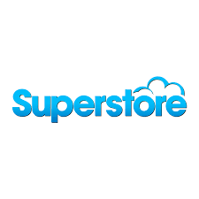

In this project, a real life dataset obtained from the PLOS medical journal was analysed. Dataset was cleaned in SQL and explored
for urinary biomarkers which play a role in Pancreatic Cancer diagnosis and prognosis. Findings were visualized in Power BI.

In this project housing data was cleaned in SQL. This was done to standardize the dataset for easier exploration,
increasing overall productivity and allowing for the highest quality information in decision-making.

The aim of the project was to roll out a
new payment reminder software (Prompt Paddi) with novel features.
For this, a market survey was conducted to understand the market's opportunities, strengths,
weaknesses and consumer behavior patterns in order to make a more informed business decision.
Data collection was via google forms.

A superstore dataset was explored in SQL. The objective was to understand the store's
performance, identify trends and make informed business decisions. This was achieved by
obtaining the sales revenue, sales by region, sales trend, customer behaviour, etcetera.

An Air bnb dataset was analysed in Tableau for actionable insight. Dataset comprised of three tables which were joined in Tableau and analysed according to already stated objectives.